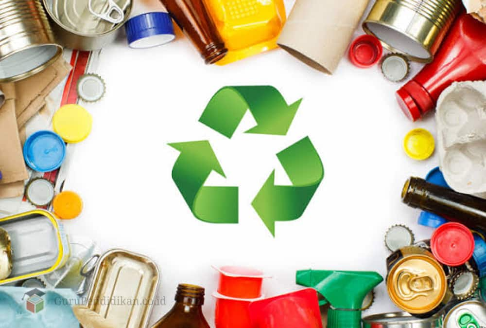
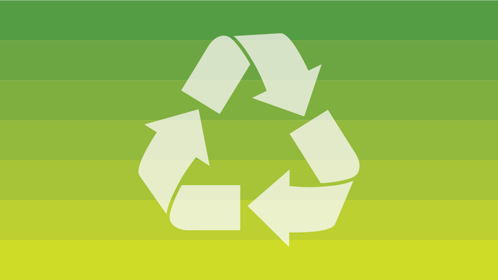
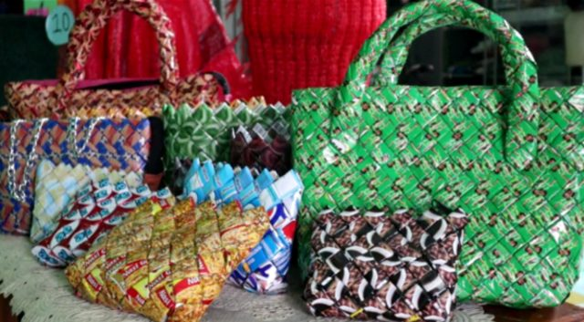
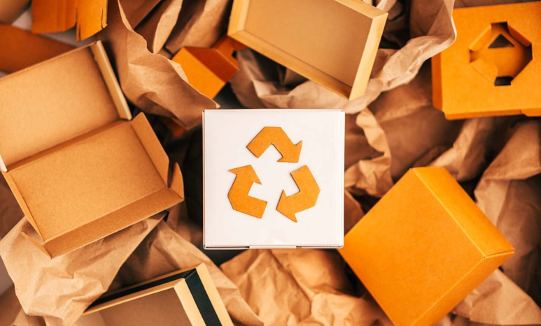

Daur Ulang Sampah

Daur ulang adalah proses untuk menjadikan suatu bahan bekas menjadi bahan baru dengan tujuan mencegah adanya sampah yang sebenarnya dapat menjadi sesuatu yang berguna, mengurangi penggunaan bahan baku
Halaman - Halaman
kedua
ketiga
keempat